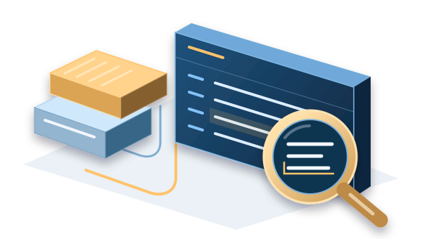

Proxmox homelab
A Proxmox lab on a 16 GB laptop with two service guests, nine experimental VMs, and documented service checks, network configuration and unresolved storage warnings.
OngoingView project
My personal projects include a Proxmox homelab and a job-search document workflow. Selected coursework covers an AWS application deployment, network troubleshooting and traffic investigations.
A Proxmox lab on a 16 GB laptop with two service guests, nine experimental VMs, and documented service checks, network configuration and unresolved storage warnings.

Deployed a course-provided catalog and review application across two EC2 instances, with recorded product searches and review submission after adapting the database import for Linux.

Planned IPv4 subnets, diagnosed client, gateway and DNS faults in Packet Tracer, and traced an IPv6 gateway loss to Router Advertisements in supplied traffic.
An agent-guided workflow that ranks postings against a source resume and generates selected DOCX/PDF resumes, a comparison report and a local review page with file warnings.

Connected a supplied Pushdo alert timeline to a Windows host, three downloaded objects and historical malware reports; a separate lab recorded Snort alerts and a firewall retest.